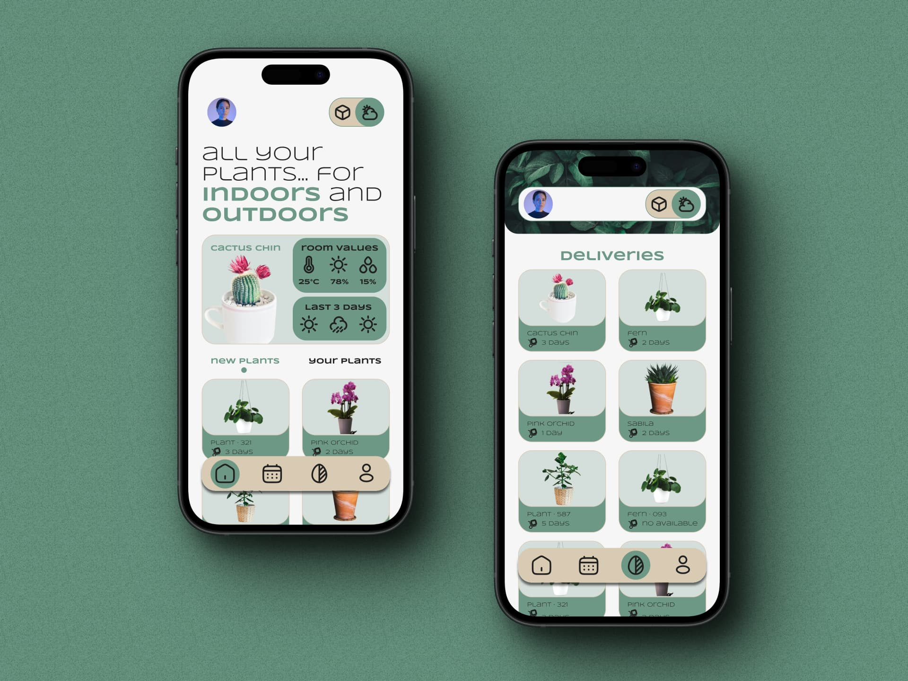
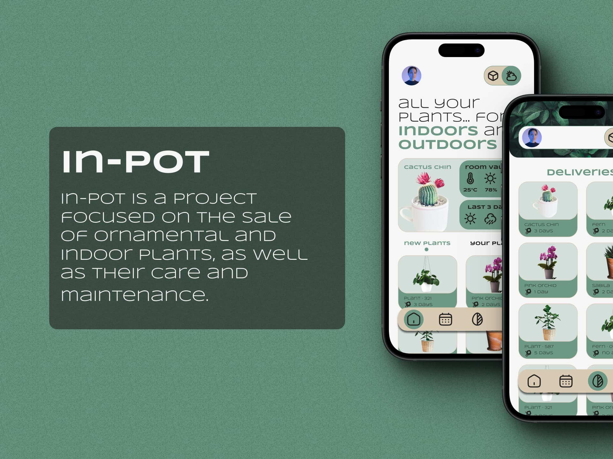
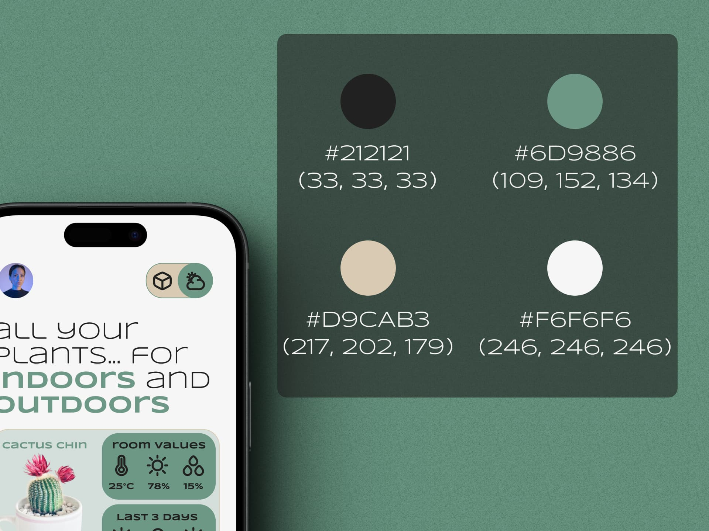
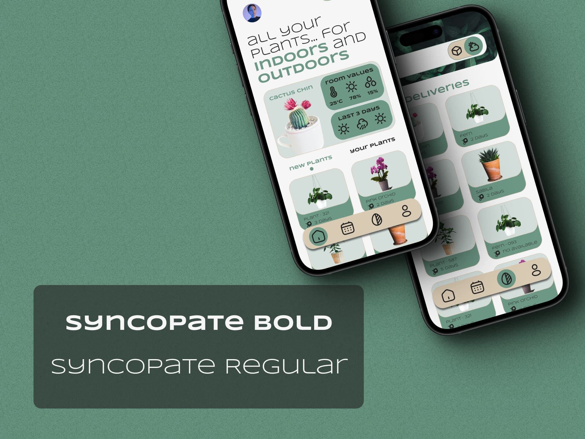

In-Pot Project
Web Design | UI/UX Design | Interface Design | Mockups & Wireframes
In-Pot Project is a personal project with a plant theme.
General information:
- Project Name: In-Pot
- Type of Business: Ornamental and indoor plant store.
- Focus: Offer a variety of plants to beautify homes and provide care tips to customers.
Project objectives:
1. Plant Sale:
- Provide a selection of ornamental and indoor plants.
- Include varieties such as succulents, ferns, cacti, orchids and more.
2. Care Tips:
- Complement the sale with care recommendations.
- Offer tips on irrigation, light, pruning and fertilization.
3. Customer Education:
- Help clients choose the right plants based on their space and experience level.
- Promote emotional connection with plants.
App content:
1. Plant Catalog:
- Show images and descriptions of available plants.
- Categorize by type (indoor, outdoor, succulents, etc.)
2. Care Tips:
- Create a section with specific tips for each type of plant.
- Include information about irrigation, light, temperature and pruning.
3. Success Stories:
- Share testimonials from clients who have managed to keep their plants healthy.
- Highlight cases of positive transformation in homes.
4. Green Community:
- Create a space where users can exchange experiences and ask questions.
- Organize virtual events such as gardening workshops.
Design and style:
- Nature and freshness.
- Use green colors and natural tones.
- Images of plants in home environments.
Value added:
- Personalized Advice: Offer clients specific recommendations based on their needs and lifestyle.
The main software used was Figma accompanied by other resources.
Photographs Used:
patrick-pahlke-6PkcqHAFsZA-unsplash by Patrick Pahlke
brina-blum-wATDAuB4Gto-unsplash by Brina Blum
nahil-naseer-xljtGZ2-P3Y-unsplash by Nahil Naseer
annie-spratt-8mqOw4DBBSg-unsplash by Annie Spratt
ceyda-ciftci-dDVU6D_6T80-unsplash by Ceyda Çiftci
ren-ran-bBiuSdck8tU-unsplash by Ren Ran
dim-hou-7W_VbGkj7lg-unsplash by Dim Hou
stephanie-harvey-f7PfM2NklZ4-unsplash by Stephanie Harvey
feey-qoegZJ3ybOY-unsplash by feey
aiony-haust-3TLl_97HNJo-unsplash by Aiony Haust
They can all be found on Unsplash, many thanks to the artists.




